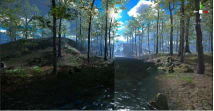
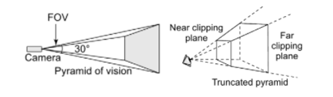
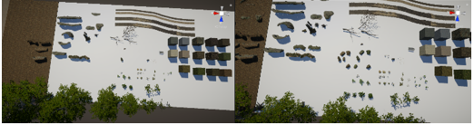
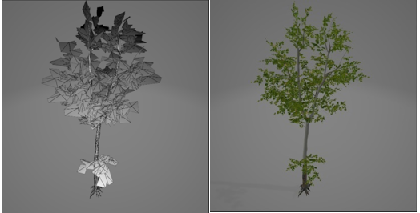

Rendering
Soo Kyung AhnIntroduction
When rendering the environment, we want the best possible graphics to create the highest sense of realism. It is a bit of an art balancing realism and performance, as they are conflicting goals and gaining on the one side results in a loss in the other. There is a limit to the amount of computation in terms of time that we can fit in for each frame rendered, and efficient rendering is important because it provides increased frame rates resulting in a more immersive experience.
Realism
We have used some graphical techniques to improve realism. Realism results in performance reduction. In general, the models for the forest were high quality scanned models and enabled us to create a realistic environment using these models. The texturing of the terrain was meticulously done to blend combinations of grass, leaves, rocks, roots, sand and soil, and debris placed (Figure 6) throughout the environment in convincing locations. The trees used were of the same species, but such forests are not rare in the world.
High Dynamic Range (HDR)
In the natural environment a wide range of color occurs, and standard dynamic range (SDR) is insufficient to create the sensation that a person is watching a real object. HDR increases has a larger range compared to SDR allowing for more realistic lighting through increased color gamut and contrast, resulting in brighter highlights, darker shadows, more details in the highlights and shadows. Through HDR we can create lighting that emulates the glare of the halo that forms around bright objects such as the sun. The image seen on the left has HDR applied on the left and SDR on the right. There is a partial glare of the sun that can be observed on the left side while there is none on the right side, and a slight color divide occurs at the center due to the difference of HDR and SDR.
Lights and Shadows
Realistic lighting and shadows are important for the environment. Cooler, sunny weather tends to be associated with less stress. The lighting of the environment was made to be quite bright and sunny, with a lower position of the sun in relation to the horizon to support the illusion of cooler weather. The sunlight for the environment has been rendered as a directional light aligned with the position of the sun in the skybox. Color temperature of daylight can range from 4800K to 10000K, and we initially used cooler light temperature of 8200K to match the cooler feel for the environment. Although the environment was relaxing according to the heuristic evaluators of the environment, research showed that warmer tones are better for relaxation. Therefore, we decided to decrease the color temperature of the sunlight to 6700K, which is a slight increase in color temperature compared to the average outdoor noon temperature of 6504K based on the D65 colorimetry standard created by the International Commission on Illumination. Additionally, we added a bloom effect to the sun to simulate its glow and add to its realism. We used the highest shadow resolution provided natively by Unity to minimize the appearance pixelated shadows, and scaled the rendering distances for shadows appropriately so the discontinuity in the shadows are unnoticeable to the user.
Antialiasing
 When rendering
computer graphics, geometric objects are sampled
which generate pixels that are rendered on a computer screen.
There is a fundamental problem of this discretization process
stemming from limited sampling rates of displays, resulting in
objects appearing blocky, or stair-wise along its edges, silhouettes,
or creases. Due to this effect known as aliasing, sometimes very small objects
disappear between samples, or complex details of the features may
be lost. To avoid aliasing, we use an antialiasing
(AA) technique to mitigate it. There are a multitude of AA
techniques in the realm of computer science, and we briefly investigated
the effect of three AA techniques: MSAA (Multisampling anti-aliasing), FXAA (Fast approximate
anti-aliasing), and
SMAA ( Subpixel morphological anti-aliasing) in our paper.
The image on the left shows an image with FXAA and 3x zoom applied. Its inherent blurring of the
scene can be observed.
When rendering
computer graphics, geometric objects are sampled
which generate pixels that are rendered on a computer screen.
There is a fundamental problem of this discretization process
stemming from limited sampling rates of displays, resulting in
objects appearing blocky, or stair-wise along its edges, silhouettes,
or creases. Due to this effect known as aliasing, sometimes very small objects
disappear between samples, or complex details of the features may
be lost. To avoid aliasing, we use an antialiasing
(AA) technique to mitigate it. There are a multitude of AA
techniques in the realm of computer science, and we briefly investigated
the effect of three AA techniques: MSAA (Multisampling anti-aliasing), FXAA (Fast approximate
anti-aliasing), and
SMAA ( Subpixel morphological anti-aliasing) in our paper.
The image on the left shows an image with FXAA and 3x zoom applied. Its inherent blurring of the
scene can be observed.
Performance
We have used some optimization techniques to make the environment run efficiently, which is important for the user experience. The techniques applied to our environment are briefly mentioned.
Frustum Culling
Any camera must restrict the scene to a finite space for rendering scenes, which prevents it from rendering forever. This is done through a technique called frustum culling which clips objects outside the view frustum and discards them. Through this process, unnecessary computation for objects outside the view frustum is removed and results in performance improvements.
Single Pass Stereo Rendering
Multi pass stereo rendering performs the computation to render the same mesh twice but treats it as different meshes and issues two draw calls, once for each eye, and without optimizations it can take up to double the time rendering compared to a mono display. This is inefficient, and single pass rendering uses the same mesh to create one image but issues two draw calls to render to each eye, by packing it into a single texture twice the width of one eye texture. Single pass instanced rendering that we used optimizes this further and reduces the draw of a mesh into a single draw call that projects twice, once for each eye by instancing each draw call. Due to the cache coherency of draw calls, it greatly reduces the CPU use and slightly reduces the GPU use, resulting in significant performance improvements.
Level of Detail
 To optimize the environment, we used models that had level of detail that changes with distance. Initially the smaller details of the environment had noticeable popping in and out of vision due to the short culling distance, and the culling distance of the models that had this issue had to be scaled individually to be unnoticeable as it distracted the user and broke the sense of immersion. The LOD popping, or the sudden appearance of objects from thin air as the distance falls below the culling distance, can be seen in the image to the left.
Textures
 To create a complex environment with a lot of detail, it is more efficient to use textures instead of creating models with every detail that is desired. They have been used extensively to create detailed surfaces of objects in the environment, including the terrain, trees, mushrooms, rocks, and other plants. The trees and plant foliage are implemented as a cloud of textured quadrilaterals which is alpha blended to make the textures transparent in the foliage to simulate the leaves. This can be seen on the left.
Baked Lights
Realtime lighting is expensive because all the computation of the lighting of the environment must be done at runtime, fighting for resources that can be used elsewhere. Therefore, we chose to use a mix of baked lighting and realtime lighting for the environment to reduce this performance cost at runtime. Baked lights are light information for static objects that do not move in a scene and are stored in a lightmap which contains the pre-calculated brightness of surfaces in the scene. This stored information is loaded to light the scene at runtime reducing the rendering cost of shadows.
Performance Evaluation
 The
environment on which the baseline performance is measured
has HDR, no SSAO, and no antialiasing. A unity project build has
been created on which we measure the performance through a
benchmarking software to measure the fps of the environment. There was no formal
testing done to measure the latency of the controllers, but heuristic
evaluation showed that there were no perceptible delays. The protocol for testing involved
travelling along the boundaries of
the environment which allows us to get an exposure to the frame rates of the overall
environment. After starting the environment, we waited for a
minute before starting to take measurements to discard any frame
drops from starting the application. Similarly, we discarded frames
a couple of seconds after beginning the benchmark. We take the
measurement for a period of 60 seconds in total, and report the
average fps with its standard deviation, the 1% and the 0.1% fps.
The 1% and 0.1% fps results indicate the fps at the worst 1% and
0.1% quantiles of frame rates recorded. This is better than using the
minimum as the benchmark which can state that we have very low
minimum fps even if it is for a negligible period which is in most cases undesirable.
The
environment on which the baseline performance is measured
has HDR, no SSAO, and no antialiasing. A unity project build has
been created on which we measure the performance through a
benchmarking software to measure the fps of the environment. There was no formal
testing done to measure the latency of the controllers, but heuristic
evaluation showed that there were no perceptible delays. The protocol for testing involved
travelling along the boundaries of
the environment which allows us to get an exposure to the frame rates of the overall
environment. After starting the environment, we waited for a
minute before starting to take measurements to discard any frame
drops from starting the application. Similarly, we discarded frames
a couple of seconds after beginning the benchmark. We take the
measurement for a period of 60 seconds in total, and report the
average fps with its standard deviation, the 1% and the 0.1% fps.
The 1% and 0.1% fps results indicate the fps at the worst 1% and
0.1% quantiles of frame rates recorded. This is better than using the
minimum as the benchmark which can state that we have very low
minimum fps even if it is for a negligible period which is in most cases undesirable.
Heuristic Evaluation
Three researchers from the University of Cape Town were asked to evaluate the environment. Two of them were active researchers in the graphics space, and one was a researcher in psychology. The evaluators were overall very happy with the state of the environment and commented that the environment had very high realism, and no issues with performance in both the display refresh rate and controller latency. They experienced no significant cybersickness when viewing the environment and have agreed that the environment would certainly be relaxing, with the psychology researcher definitively stating that she was relaxed, while the computer science researchers stated that they were more focused than relaxed to give as much feedback as possible for the evaluation but mentioned it certainly would be relaxing. They made important points relating to the rendering, usability, and realism which are discussed in detail in the paper.
Conclusion
We created a realistic, realtime, and restorative environment through meticulous design of the
environment
to capture restorative elements of real nature, and the balance of quality and performance.
The presence and usability of the environment was ensured through research in restorative
environment design, psychology, and
various rendering and optimization techniques from computer science.